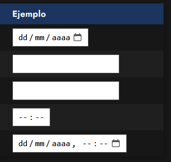
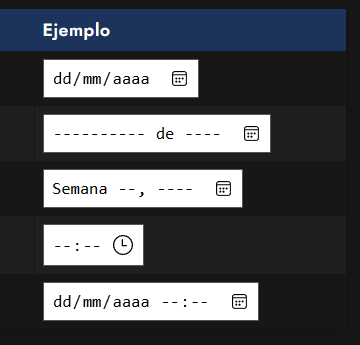

La etiqueta input tiene muchos tipos posobiles, uno de ellos son los type relacionados con fechas:
- date: Permite elegir una fecha.
- month: Permite introducir un mes.
- week: Permite introducir una semana.
- time: Permite introducir una hora.
- datetime-local: Permite introducir una fecha y hora.
Como en el resto de inputs, se les puede aplicar los atributos, value, max, min,...
Además hay que recordar que los controles cambian según el navegador:
| Firefox | Edge |
|---|---|
|  |  |
Código
<form class="choose-date" method="post" action="#" name="choose-date">
Seleciona la fecha:
<input type="date"
min="2024-11-15" max="2024-12-15">
<input type="submit" value="Enviar">
</form>
Resultado: